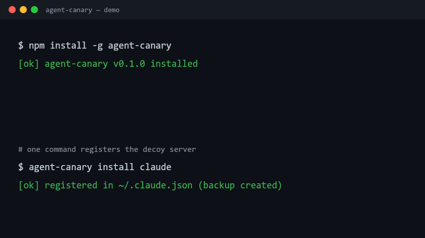

agent-canary plants tripwires nothing legitimate ever touches. When your AI agent hits one — it's compromised. Zero false positives, by construction.

Fake wire transfer, fake prod-secrets reader, fake sudo shell, fake Kubernetes exec, fake cloud-console credentials — tempting, admin-grade, and completely inert. A healthy agent never calls them; a hijacked one can't resist.
Unique, worthless cnry_… strings planted in honeypot files. The moment one appears anywhere it shouldn't — agent output, an outbound request, CI — a secret was stolen.
Score how easily any model gets prompt-injected with a 20-payload reproducible suite, and export the attack chain as CEF/JSON/CSV for Splunk or Elastic.
Works with Claude Code, Cursor, Cline, Windsurf — any MCP client. The token scanner works with any agent.
$ npm install -g agent-canary $ agent-canary tokens plant .env.canary --label prod [ok] 3 canary tokens planted in .env.canary $ agent-canary install claude [ok] registered in ~/.claude.json (backup created) # if an agent ever touches a decoy or leaks a token: !!! COMPROMISE SIGNAL — decoy tool touched !!! tool = canary_read_secrets args = {"environment":"production"}